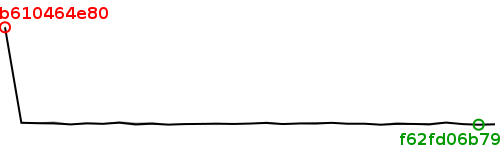

| Revision | Average | Min | Max | Size (bytes) | Benchmarked on | All times |
| bd64a1b794 | 30.13 | 29.74 | 30.44 | 87444 | Wed Aug 8 00:11:18 2012 | All times |
| f62fd06b79 | 29.94 | 29.58 | 30.18 | 87444 | Wed Aug 8 00:48:26 2012 | All times |
| 5fd2fc8e32 | 30.24 | 30.14 | 30.38 | 87444 | Tue Aug 7 22:56:28 2012 | All times |
| b6b26f5afd | 30.97 | 30.65 | 31.25 | 87484 | Tue Aug 7 23:34:01 2012 | All times |
| b52990befb | 30.15 | 29.49 | 30.73 | 87484 | Tue Aug 7 20:50:11 2012 | All times |
| 225b47efbd | 30.28 | 30.08 | 30.59 | 87444 | Tue Aug 7 21:27:30 2012 | All times |
| 3eea24e04a | 30.37 | 29.82 | 31.28 | 87484 | Tue Aug 7 22:04:48 2012 | All times |
| 876615e258 | 29.94 | 29.68 | 30.10 | 87484 | Tue Aug 7 09:50:10 2012 | All times |
| 43955e8062 | 30.42 | 30.24 | 30.62 | 87520 | Tue Aug 7 06:08:06 2012 | All times |
| d7b4d238af | 30.39 | 30.22 | 30.56 | 87520 | Tue Aug 7 03:52:38 2012 | All times |
| 71bb64df71 | 30.84 | 30.50 | 31.15 | 87520 | Tue Aug 7 04:30:07 2012 | All times |
| 9c9e2c6b1d | 30.53 | 30.03 | 31.24 | 87080 | Tue Aug 7 02:29:01 2012 | All times |
| fa7ff84d47 | 30.50 | 30.31 | 30.87 | 86589 | Tue Aug 7 00:34:36 2012 | All times |
| da9d9a6660 | 30.25 | 29.90 | 30.51 | 86629 | Mon Aug 6 17:57:21 2012 | All times |
| 050eba485a | 30.80 | 30.23 | 31.39 | 86589 | Mon Aug 6 07:15:00 2012 | All times |
| 5f8dd93b2a | 30.49 | 30.36 | 30.57 | 86530 | Mon Aug 6 07:53:08 2012 | All times |
| d77b4c9404 | 30.29 | 30.24 | 30.37 | 86570 | Mon Aug 6 02:17:47 2012 | All times |
| 67a79d5510 | 30.41 | 30.02 | 30.90 | 86530 | Mon Aug 6 02:54:17 2012 | All times |
| 6d56f4429e | 30.31 | 29.99 | 30.70 | 86570 | Mon Aug 6 18:34:14 2012 | All times |
| 4c48da17fe | 30.22 | 29.91 | 30.76 | 86530 | Mon Aug 6 01:40:21 2012 | All times |
| e3d59a330e | 29.97 | 29.86 | 30.15 | 86570 | Mon Aug 6 03:31:28 2012 | All times |
| c289daf4db | 30.43 | 29.93 | 31.29 | 86530 | Mon Aug 6 19:11:17 2012 | All times |
| a29fd0668e | 30.14 | 29.42 | 31.03 | 86570 | Mon Aug 6 04:45:46 2012 | All times |
| 07cd608e26 | 30.93 | 30.39 | 31.55 | 86570 | Mon Aug 6 04:08:19 2012 | All times |
| bfdb8242d9 | 30.37 | 30.18 | 30.70 | 86530 | Sat Aug 4 10:54:57 2012 | All times |
| 743d05c89c | 30.56 | 30.22 | 31.04 | 86570 | Sat Aug 4 09:21:10 2012 | All times |
| 7caeaa0b05 | 30.08 | 29.81 | 30.35 | 86570 | Sat Aug 4 02:01:13 2012 | All times |
| 15b9cc32d4 | 30.64 | 29.85 | 31.54 | 86570 | Sat Aug 4 09:58:29 2012 | All times |
| 7464bfd078 | 30.68 | 30.19 | 31.06 | 86570 | Fri Aug 3 01:49:46 2012 | All times |
| b38abd8131 | 30.86 | 30.33 | 31.19 | 86570 | Fri Aug 3 01:13:47 2012 | All times |
| b610464e80 | 76.15 | 75.38 | 77.62 | 86570 | Mon Aug 6 08:35:07 2012 | All times |
Written on Wed Aug 8 17:42:22 2012.